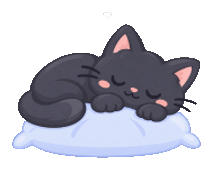
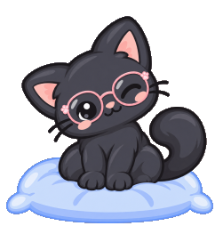

Es momento de una pausa
00:00
El descanso termina pronto
Descansa hoy,
para ver un mejor mañana

Ejercicios
00:20
Sin prisa, tus ojos lo agradecerán

Tus ojos también
se cansan.
Mira hacia un punto lejano, parpadea varias veces y respira profundo.
♥
20-20-20
Cada 20 min mira a 20 pies (6 metros) por 20 segundos.
Parpadea
Mantén tus ojos hidratados.
Estírate
Tu cuerpo también lo necesita.
Cuídate
Una vista sana también es productividad.
Ejercicios para tus ojos
Sigue cada paso con calma y sin forzar la vista
♥